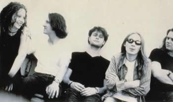
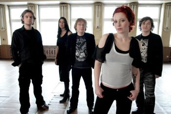

A trajetória da banda holandesa The Gathering
começa no ano de 1989, quando os irmãos René
Rutten (guitarra) e Hans Rutten (bateria e percussão) juntaram-se
a Bart Smits (vocais) com a idéia de formar uma banda de
metal. Agregaram-se à banda também, completando
a formação, Hugo Prinsen Geerligs (baixo), Jelmer
Wiersma (guitarra) e Frank Boeijen (teclados e programação).
Assim, a banda começa a dar seus primeiros
passos gravando os demos An Imaginary Symphony e Moonlight
Archer, em 1990, ainda com uma proposta musical baseado em
death e doom metal, com vocais guturais feitos por Bart Smits.
Com essas demos a banda passa a ter um certo reconhecimento e
é convidada para abrir vários shows.
Em 1992, a banda grava então, seu primeiro
álbum Always..., através da editora Fundation
2000. Além de Bart, os vocais foram feitos pelo recém
integrante Marike Groot. O álbum tem ótima recepção
no cenário metal europeu.
No ano seguinte, René Rutten, líder
e guitarrista do grupo, mostrando-se descontente com a linha musical
adotada, decidiu mudá-la para um som menos pesado e mais
atmosférico, o que resultou na saída dos vocalistas
Bart Smits e Marike Groot que não compactuavam com tal
pensamento. Assim, são integrados à banda os vocalistas
Niels Duffhuës e Martine van Loon e é lançado
o segundo trabalho do The Gathering, intitulado Almost a Dance,
já sem o mesmo peso e vocais guturais que caracterizavam
até então.
Ainda
assim, tal sonoridade não agradava René Rutten.
Foi quando fora apresentado a uma jovem de 21 anos chamada Anneke
Van Giersbergen. A talentosa vocalista revolucionou o som do The
Gathering, trazendo influências de bandas como Pink
Floyd e Dead Can Dance. Dessa forma, passou a compor
praticamente todas as músicas e com sua visão musical,
mudar o estilo para um "Metal Atmosférico".
Em 1996, a banda lança o álbum
Mandylion, gravado pela editora Century Media, trazendo
um enorme sucesso. O disco já apresentou os primeiros sinais
da mudança desejada, mas ainda trazia resquícios
dos seus antecessores. O ano foi dedicado aos shows pela Europa,
incluindo participações em grandes festivais, como
o Dynamo Open Air e o Pink Pop Festival.
No ano seguinte a banda faz apresentações
pela Bélgica, Luxemburgo, Suíça e Alemanha.
Retornando, grava o excelente Nighttime Birds, um trabalho
com momentos transcendentais e intimistas, com grande importância
para a cena da música atmosférica da época.
Em 1998 o guitarrista Jelmer Wiersma abandona
a formação e com ele os últimos resquícios
de death metal que a banda poderia ter. Percebe-se isso no trabalho
seguinte, How to Measure a Planet?, de 1999, que possui
uma proposta ainda mais leve e melódica, tendo sido comparada
à bandas como Radiohead e Massive Attack.
Na parte lírica também ocorrem mudanças,
com músicas que falam de vários outros temas. Ainda
em 99 a banda faz uma extensa turnê pelos Estados Unidos,
México e Reino Unido. É lançado também
o álbum Ao Vivo, Superheat, com gravações
mais recentes de shows.
No ano seguinte, com gravações
em dois pequenos estúdios na Holanda, e com todas as faixas
sendo tocadas em um só take, The Gathering lança
seu sexto álbum, if_then_else, que segue o mesmo estilo
do álbum anterior, mas com algumas experimentações
com sons eletrônicos e doses discretas do peso metálico.
A banda lança em 2001 o álbum Downfall:
The Early Years, uma compilação com algumas músicas
de 1990 e 1991.
Em 2002 a editora Century Media lança
o DVD In Motion, sem permissão da banda. Já
com outro selo a banda lança então o EP Black
Light District. Completamente diferente dos álbuns
anteriores, este EP contém influências de alternative
rock.
Depois de dois anos de trabalho, surge em 2003,
o álbum Souvenirs, produzido por Zlaya Hadzich,
já com editora própria, de nome Psychonaut Records.
Durante esse ano a banda parte em turnê pela Europa e América,
que posteriormente daria origem a outro CD Live.
Sleepy Buildings - A Semi Acoustic Evening
chegou no ano seguinte para cumprir o contrato com a ex-gravadora.
Após
esse período Anneke fica grávida de seu marido Rob
Snijders, mas fica em turnê até quase 8 meses de
gestação, quando então faz uma pausa. Em
fevereiro de 2005 nasce Finn, o primeiro filho de Anneke, e logo
após ela retorna as atividades. O ano é passado
em turnê que daria origem ao DVD A Sound Relief,
que ganha o prêmio Music Award. Nessa turnê
é apresentada uma nova baixista, Marjolein Kooijman, que
substitui Hugo Prinsen Geerligs. Ainda em 2005, mais um lançamento
da ex gravadora: Accessories - Rarities & B-Sides.
Em março de 2006, a banda toca no Brasil,
no Via Funchal, levando a loucura os fãs que sempre esperaram
por sua visita ao país. Ainda em 2006 é lançado
o álbum Home, um trabalho mais contido e mais
básico, sem grandes experimentações, mas
que mantém a grande qualidade musical. Anneke ganha o prêmio
Devil Award, na categoria de melhor cantora.
Em junho de 2007, a vocalista Anneke van Giersbergen
anuncia sua saída do The Gathering, por motivos pessoais,
causando tristeza a milhões de fãs. Anneke forma
então, sua própria banda, chamada Agua de Annique.
O DVD A Noise Severe, é lançado
ainda em 2007 e tem grande venda, principalmente por ser o último
com Anneke. Apenas em março de 2008 a banda anuncia a nova
vocalista. Silje Wergeland, ex-integrante do Octavia Sperati,
passa a ocupar a posição de Anneke. Em meados de
2009, o The Gathering lança mais um trabalho em sua extensa
carreira.
The West Pole conta com dez faixas e
participações especiais de outros artistas como
as cantoras Anne van den Hoogen e Marcela Bovio. O disco mantém
a proposta atmosférica que caracterizou a banda, mas com
elementos diferentes de outros trabalhos. Silje absorve bem a
proposta musical da banda e adota um estilo próprio nas
vocalizações sem "imitar" Anneke. The
West Pole é um trabalho que acresenta muito à
discografia do The Gathering e dá continuidade a uma história
tão longa e sólida. The West Pole foi produzido
pelo guitarrista René Rutten e mixado por Zlaya Hadzich
e René.
Com uma carreira de grandes sucessos e uma trajetória
tão marcante, a banda The Gathering, mesmo com tantas modificações
em sua formação e sonoridade, terá sempre
lugar cativo no cenário metal mundial.
Por
Spectrum
Downloads
Disponíveis: